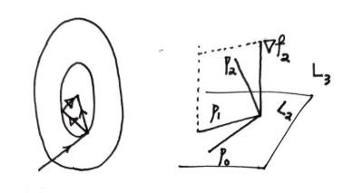

共轭梯度法（CG Method）#
如果初始点的选择不好或者函数行为不好时，最速下降法可能并不理想。我们先从几何和直觉上展示共轭梯度法，同时可以在后文理清数学逻辑后再来看看这两张图。

对于精确线搜索，最速下降法的前后两步的下降方向必定是垂直的，从而导致了可能的 zigzag 现象。共轭梯度法所选择的共轭方向 \(p_i\) 更加具备全局性；例如图中的二次函数 \(f=\frac{1}{2}x'Ax-b'x,\ \nabla f = Ax-b\)，第二步的方向一定指向最优点 \(Ax^*=b\)。右图可见共轭方向并不一定垂直，而是 \(A\) 意义下的垂直：\(p_i'Ap_j = 0,\ i\neq j\)。注意到对于 \(A\in \mathbb{S}_+\)，易证这一组 \(\{p_i\}_{i=1}^n\) 线性独立，我们希望逐步获得 \(x^*\) 在这组基上的表示。
我们先考虑线性版本（即上面的 \(f\)）。
假装我们能获取每一步的搜索方向 \(p_i\)，那么由精确线搜索知 \(p_i \perp -\nabla f_{i+1}\)，其中 \(\nabla f_{i+1} := \nabla f(x_{i+1})\)，且 \(x_i = x_0 + \sum_{j=0}^{i-1}\alpha_j p_j\)，\(\alpha_i\) 记步长。
同时我们可以直接得到一个关于搜索步长的表达式，对 \(f(x_i + \alpha_i p_i) = g(\alpha_i),\ g'(\alpha_i) = 0\) 得到
第二个等号代入了 \(x_i\) 和 \(\nabla f\) 的表达式。接下来我们要确定这些 \(p_i\)。共轭梯度法告诉我们，以下两个条件在我们目前的 setting 下等价：
Theorem \(\quad\) The following two are equivalent: $$
\nabla f_i'p_j = 0,\ \forall j<i \tag{4} $$
亦即 \(\nabla f_i \perp (L_i - x_0)\)；还有一个垂直的表现形式见下面。利用 \(\mathrm{(i)}\) 可以证明上式。
\(\mathrm{(ii)}\rightarrow \mathrm{(i)}\)：同上面基本一致，注意利用归纳的假设（\(\leq i\) 之内皆成立有 \(\mathrm{(i)}\)）\(\Box\)
目前为止我们仍然没有给出明确的每步 \(p_i\) 的获取方式。我们采用一种非常自然的想法，考虑到我们想要最快的下降，处在每一步时走的新维度应该由 \(\nabla f_i\) 提供（但我们说了，直接沿 \(\nabla f_i\) 并不是最理想的方法；我们希望看长远一点，因为它缺乏类似 2 的各步最优的协调性）。因此 \(p_i = -\nabla f_i + \sum_{j=0}^{i-1}\beta_j p_j\) 看上去很合适，再对两边点乘 \(p_j'A\) 即可得到各个 \(\beta_j\)；但我们希望更简洁一点，\(p_i = -\nabla f_i + \beta_{i-1} p_{i-1}\) 同样是可行的。此时得
在这一更新方式下，还可以发现
以及（利用 \(p_0 = - \nabla f_0,\ \nabla f_i = \nabla f_0 + \sum_{j=0}^{i-1}\alpha_j A p_j.\)）
Corollary 2
同时还有（\(\text{(4')}\) 由 \(\text{(4)}\) 上下同乘 \(\alpha_{i-1}\)，可称 Fletcher–Reeves 式）
到这里最开始的图景应该已经解释清楚了。总结成算法如下（注意我们尽量减少矩阵相乘）：
Input: Initial \(x_0\);
Output: \(x_k\);
Set \(r_0 \leftarrow A x_0-b, p_0 \leftarrow-r_0, k \leftarrow 0\);
while \(r_k \neq 0\) do
\(\alpha_k \leftarrow \frac{r_k^T r_k}{p_k^T A p_k}\);
\(x_{k+1} \leftarrow x_k+\alpha_k p_k\);
\(r_{k+1} \leftarrow r_k+\alpha_k A p_k\);
\(\beta_{k+1} \leftarrow \frac{r_{k+1}^T r_{k+1}}{r_k^T r_k}\);
\(p_{k+1} \leftarrow-r_{k+1}+\beta_{k+1} p_k\);
\(k \leftarrow k+1\);
end while
假设我们对目标函数的性质没有这么了解，一般的 \(f\) 也可以使用上面的算法吗？直接的修改版本是：
Input: Initial \(x_0\);
Output: \(x_k\);
Set \(r_0 \leftarrow \nabla f(x_0), p_0 \leftarrow-r_0, k \leftarrow 0\);
while \(r_k \neq 0\) do
\(\alpha_k \leftarrow \text{step size}\);
\(x_{k+1} \leftarrow x_k+\alpha_k p_k\);
\(r_{k+1} \leftarrow \nabla f(x_{k+1})\);
\(\beta_{k+1} \leftarrow -\frac{\nabla f_i'\nabla f_i}{\nabla f_{i-1}'\nabla f_{i-1}}\);
\(p_{k+1} \leftarrow -r_{k+1}+\beta_{k+1} p_k\);
\(k \leftarrow k+1\);
end while
此时 \(A\) 不存在了，一切都按照 \(\nabla f\) 的那些表达式来。虽然我们仍然可以按照线搜索取出 \(\alpha_i\)，但上面的主要定理也不存在了，那么使用这个搜索方向的更新式还有用吗（尤其在步长并不是精确或采用其他准则的时候）？具体而言，针对使用 Fletcher-Reeves 格式的 \(\beta\) 和 Strong Wolfe 条件（系数满足 \(0<c_1<c_2<\frac{1}{2}\)）的 \(\alpha\)，我们有
这保证了我们行走在下降方向上。但是足够好了吗？如果 \(\left\|\nabla f\left(x_k\right)\right\|\) 和 \(\nabla f\left(x_k\right)^T p_k\) 都很小，搜索方向几乎和梯度垂直且移动缓慢，它的自我修复能力并不强。下面是 Dai-Yuan 格式（易见在线性梯度时与我们前面的各式都等价），它在一定条件下能保证全局的收敛性。
我们将用 Zoutendijk 条件证明。